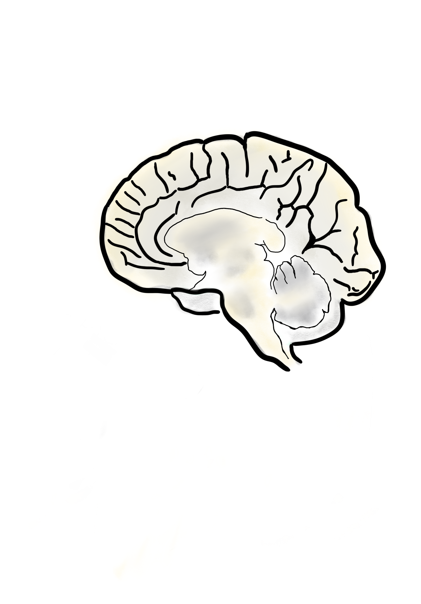

Select Pathway
Reward Pathway
Limbic System
Language Pathways
Vision Pathways
Mesocortical Pathway
Mesostriatal Pathway
Tuberoinfundibular Pathway
Mesolimbic Pathway
Fear Conditioning Pathway
Select a Pathway